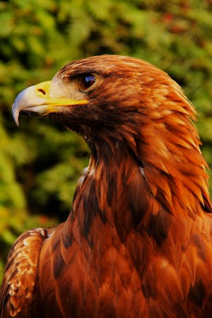
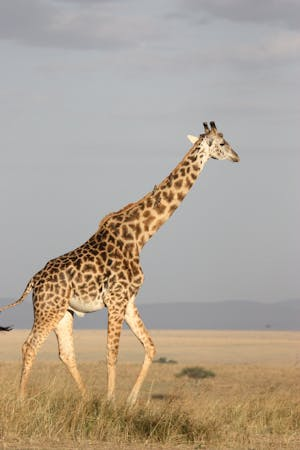
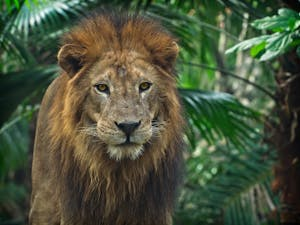

Eagles are majestic birds of prey known for their impressive size, powerful build, and keen eyesight. Belonging to the family Accipitridae, they are found on every continent except Antarctica, with the bald eagle and the golden eagle being among the most recognized species.

Giraffes are the tallest land animals, easily recognized by their long necks and distinctive spotted coats. Native to the savannas and open woodlands of Africa, these gentle giants can reach heights of up to 18 feet, allowing them to browse on leaves and fruits high in trees that other herbivores cannot access.

Lions are often referred to as the "king of the jungle," though they primarily inhabit grasslands and savannas in Africa, with a small population in India. Known for their majestic manes and powerful presence, male lions are easily distinguished from females, who are typically smaller and lack manes.
